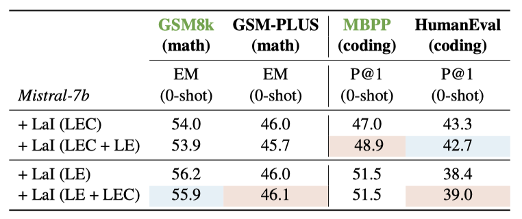

LLMs-as-Instructors: Learning from Errors Toward Automating Model Improvement
Abstract
This paper introduces the innovative "LLMs-as-Instructors'' framework, which leverages the advanced Large Language Models (LLMs) to autonomously enhance the training of smaller target models. Inspired by the theory of "Learning from Errors'', this framework employs an instructor LLM to meticulously analyze the specific errors within a target model, facilitating targeted and efficient training cycles. Within this framework, we implement two strategies: "Learning from Error," which focuses solely on incorrect responses to tailor training data, and "Learning from Error by Contrast,'' which uses contrastive learning to analyze both correct and incorrect responses for a deeper understanding of errors.
Our empirical studies, conducted with several open-source models, demonstrate significant improvements across multiple benchmarks, including mathematical reasoning, coding abilities, and factual knowledge. Notably, the refined Llama-3-8b-Instruction has outperformed ChatGPT, illustrating the effectiveness of our approach. By leveraging the strengths of both strategies, we have attained a more balanced performance improvement on both in-domain and out-of-domain benchmarks. Our code can be found at this GitHub link.LLMs-as-Instructors Framework

How effective is the LLMs-as-Instructors framework for LLMs improvement?
Utilizing GPT-4-preview as the instructor, we have successfully enhanced both the Mistral-7b-Instruct and Llama-3-8b-Instruction models, employing two distinct analysis strategies. The two models realize significant enhancements on both ID and OOD benchmarks, irrespective of the strategy employed.
In comparison with open-source models of similar or even larger scale, such as Gemma-7B-Instruct, Llama-2-70b-Chat, and Mixtral-8x7B-Instruct, the refined Mistral-7b-Instruct demonstrates a clear superiority, particularly in coding, mathematical reasoning, and overall general reasoning. Both strategies surpass these models by an average of 14%. Moreover, the refined Llama-3-8b-Instruction surpasses the performance of ChatGPT by 0.7% averagely, achieving state-of-the-art results as shown in the table. Considering that the performance of Llama-3-8b-Instruction is already high, the fact that our framework could further enhance it underscores the effectiveness of our approach.

Impact of Iterations and Difference Strategies on Improvement
Through three successive training iterations of Mistral-7b-Instruct, we find that under both strategies, the model consistently achieves either progressive improvement or sustains a performance level on par with the preceding iteration in each round.
The applicability of the strategies varies --- Learning from Error by Contrast is advantageous in scenarios with a rich set of question samples, while Learning from Errors is more effective for general questions. Also, OOD evaluations show an average 1.7% performance boost with contrastive pairs, indicating that it produces more generalizable data. Leveraging the unique strengths of both strategies, we undertake preliminary experiments to enhance the model's performance more evenly:
BibTeX
@misc{ying2024llmsasinstructorslearningerrorsautomating,
title={LLMs-as-Instructors: Learning from Errors Toward Automating Model Improvement},
author={Jiahao Ying and Mingbao Lin and Yixin Cao and Wei Tang and Bo Wang and Qianru Sun and Xuanjing Huang and Shuicheng Yan},
year={2024},
eprint={2407.00497},
archivePrefix={arXiv},
primaryClass={cs.CL},
url={https://arxiv.org/abs/2407.00497},
}